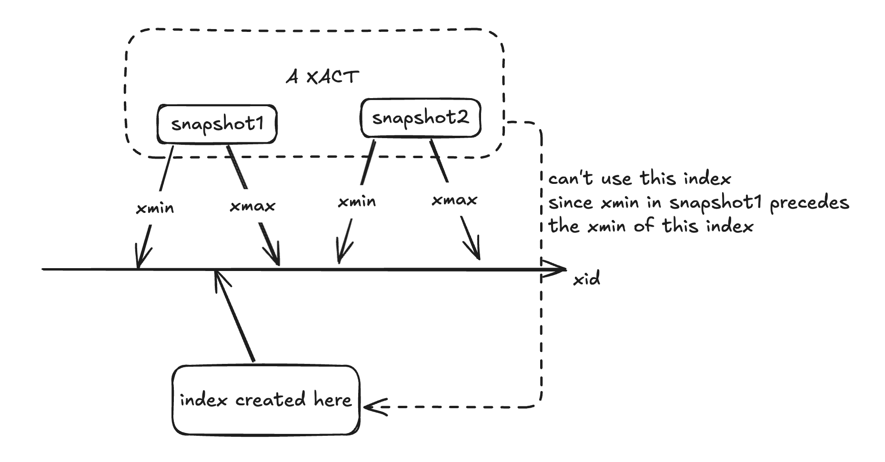

create index basics
0 概述
本文介绍普通的创建索引的大致过程（或者说 access method 对应的框架），包括从入口函数，到进入对应的 access method 的过程。不包括 access method 的内部实现。分区表，表达式索引等非主要特性这里省略。
1 准备步骤
- 权限校验：包括
- 选择索引名， access method （主要是确认 access method 是否存在）
- 加锁：shared lock，阻止写入
2 创建空索引
- 创建 heap
heap_create- build relcache
- 创建文件
smgrcreate - 记录依赖
- 向
pg_class,pg_index,pg_attribute中写入对应的记录 - 注册对应表的缓存无效信息，会在事务结束时发送
CacheInvalidateRelcache
3 调用对应的 index access method 创建索引
这里和 HOT 关系较大，需要简单展开：
在 index access method 内部，会使用回调函数 heapam_index_build_range_scan 来扫描 heap，以确定有哪些 tuple 需要被创建索引。
- 此时使用的快照为
SnapshotAny，即所有行都可见。 - 每当扫描到一个
tuple时，像执行 vacuum 一样判断该 tuple 是否能被 vacuum。有一个tuple- 对所有事务都不可见
HEAPTUPLE_DEAD，那么显然不需要对他创建索引 - 如果所有事务都可见
HEAPTUPLE_LIVE，那么显然需要对他创建索引 - 如果一些事务可见：
HEAPTUPLE_RECENTLY_DEAD被删除了，但是有些事务仍然可以看到？？？INSERT_IN_PROGRESS和DELETE_IN_PROGRESS：考虑到大部分情况下create index语句不会在事务块中执行，这里跳过。
- 对所有事务都不可见
HEAPTUPLE_RECENTLY_DEAD 是重点：如何处理
3-1 非 HOT
说明该 tuple 被删除了，但是有一些事务仍然对其可见，那么也需要加入到索引中。否则这些事务后续通过当前创建的索引就无法找到该元组。
注意：在判断一个表有哪些索引时，使用快照是“最新的快照”，而非当前事务的快照。
3-2 HOT
如果该 tuple 在 HOT 链中（不在末尾，否则就是 HEAPTUPLE_DEAD OR HEAPTUPLE_LIVE），问题就有些棘手。
- 此时不方便将 HOT 链破坏掉。（创建索引的时候直接修改 HEAP 中内容确实不算合理）
- 但如果不破坏，就（必须）将该 tuple 加入到新索引中，而该 HOT 链可能和新索引冲突
为此，PostgreSQL 采取了一种巧妙地方式
- 不将该 tuple 加入到新索引中
- 对于一些仍然可以访问该 tuple 的事务，阻止其使用新索引。
组织的方式为：pg_index 中有字段 indcheckxmin 。当该字段为 true 时，如果有事务像用该索引，需要确保自己的 TransactionXmin （逻辑）大于 pg_index 中对应 tuple 的 xmin
TransactionXmin表示当前事务的所有快照中，最小的的 xmin。（快照中，xmin前的事务都结束了）pg_index中对应 tuple 的xmin表示 该索引创建的 xid

最后更新于